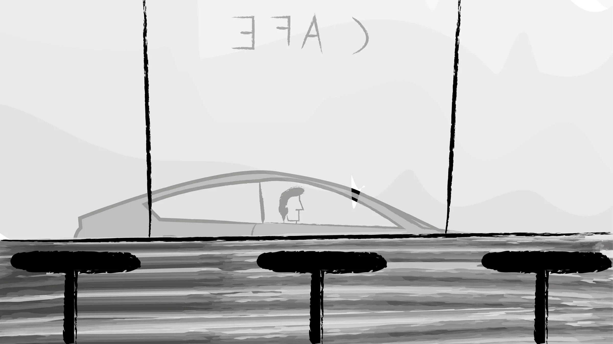
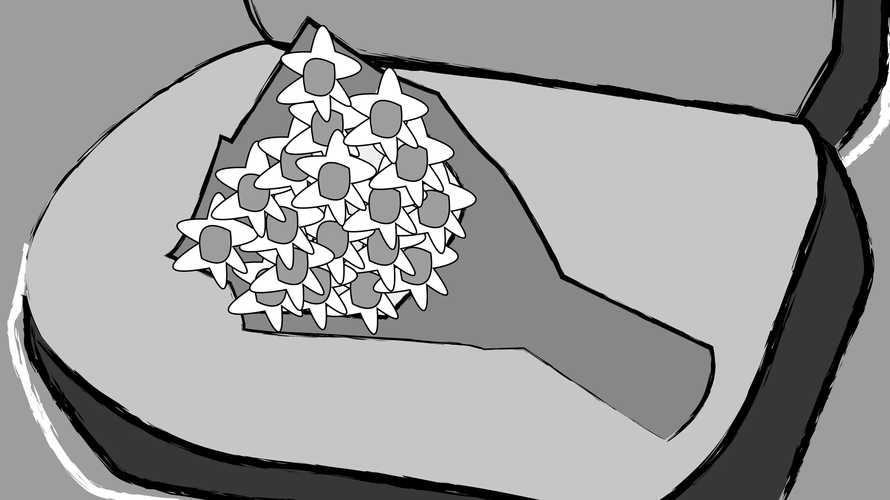
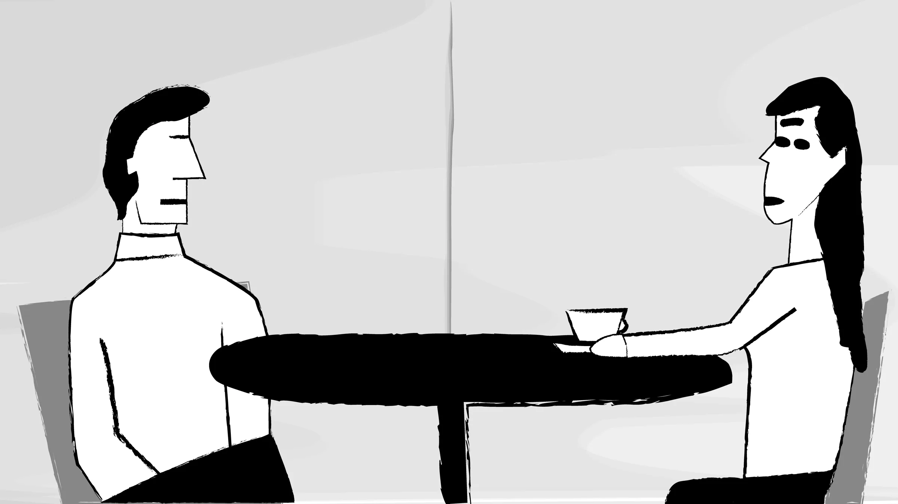
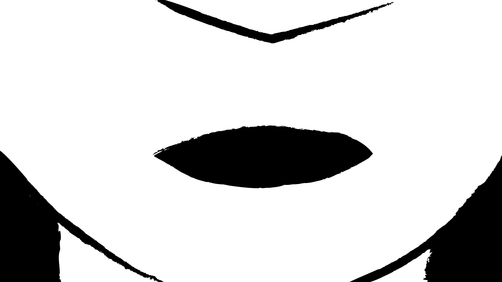

Animación · Motion Graphics
Puntos Suspensivos
Un cortometraje de la vida
Un cortometraje de la vida
2023
CONTEXTO
Este cortometraje presenta una charla introspectiva entre dos personas que reflexionan sobre cómo han cambiado los valores y conceptos en torno a las relaciones amorosas. En su diálogo, plantean una crítica sobre el sobreconsumo de la sociedad actual, que nos arrastra en todos los aspectos de la vida, incluso en el amor, convirtiéndolo en un ciclo vicioso.
Inspirado en La La Land, en el arte de David Finch y en mis propias experiencias personales, el proyecto es una representación visual en dos dimensiones de estos temas profundos.

Una introspección sobre el amor moderno
AÑO
2023
CATEGORÍA
Animación · Motion Graphics
STACK
After Effects · Illustrator · Photoshop

Ilustraciones propias

Efecto acuarela para representar las emociones
La estética busca transmitir el contraste entre lo romántico y lo crítico, creando una atmósfera única para explorar estos temas.

Distintas tomas